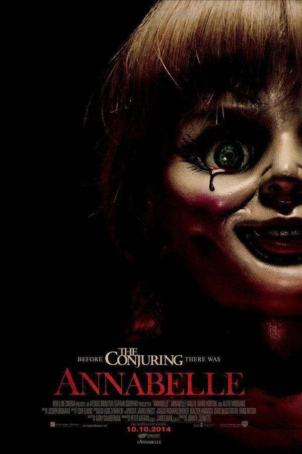
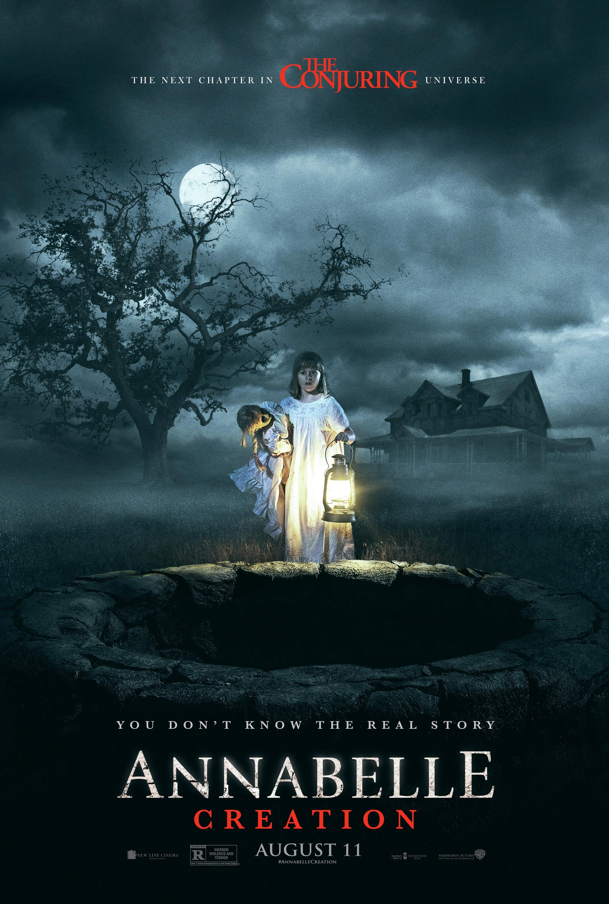
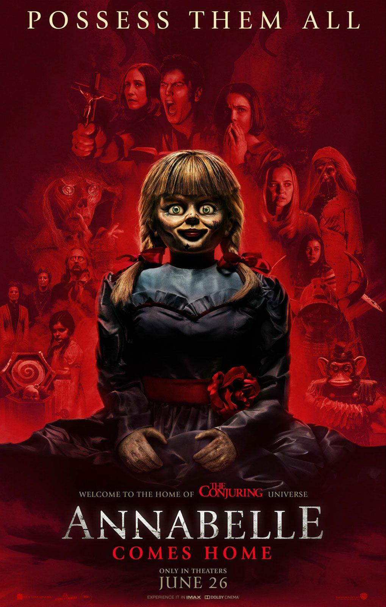
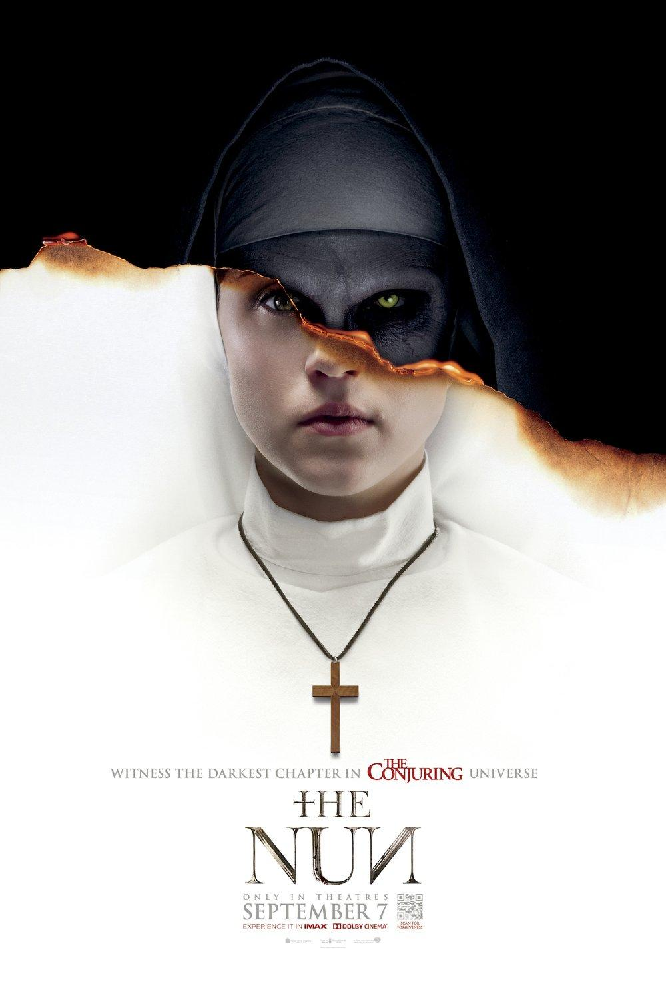
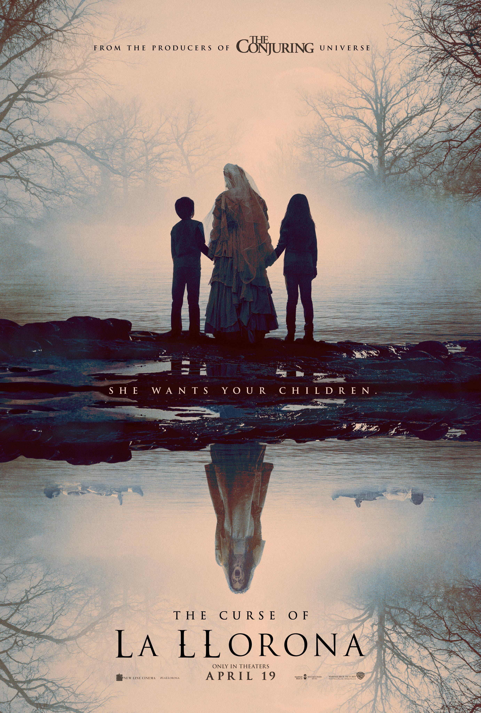
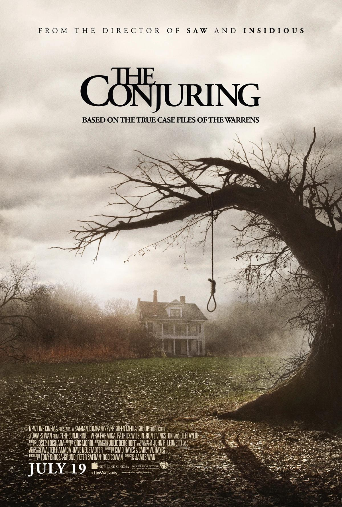
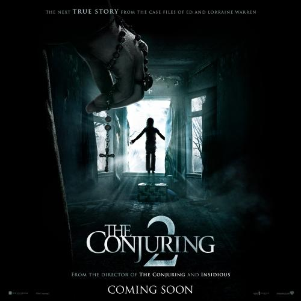
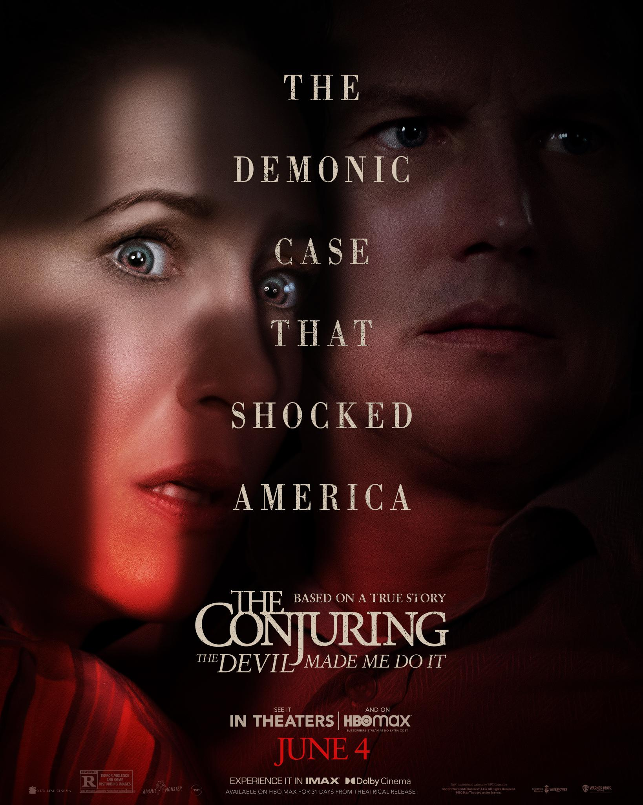

Invocação do mal - Sagas
A saga "Invocação do Mal" é uma franquia de terror sobrenatural que se baseia nas investigações de Ed e Lorraine Warren, um casal de demonologistas. A série explora a história de uma família que enfrenta eventos paranormais em sua nova casa, incluindo a possibilidade de possessões e a maldição de uma boneca amaldiçoada. Os filmes da franquia, que incluem "Invocação do Mal", "Annabelle" e "A Freira", mostram como a boneca Annabelle se torna um canal para forças malignas e ganha peso dentro das histórias dos Warren. A saga também se conecta a outros filmes e séries, como "A Maldição da Chorona", que traz o Padre Perez, interpretado por Tony Amendola, personagem que aparece em Annabelle e reforça essa ligação direta entre as histórias. A franquia tem sido bem recebida por fãs de terror e tem se tornado um dos maiores universos de filmes de terror sobrenatural.

Annabelle 2014
Annabelle conta a história de John e Mia Form, um casal que está esperando o primeiro filho. John presenteia Mia com uma boneca antiga chamada Annabelle, que passa a fazer parte da decoração do quarto do bebê. Certa noite, a casa do casal é invadida por integrantes de uma seita satânica. Durante o ataque, uma das integrantes segura a boneca e comete suicídio, fazendo com que uma presença sobrenatural passe a assombrar a família. Depois disso, acontecimentos estranhos começam a acontecer: objetos se movem sozinhos, portas se abrem, luzes falham e Mia percebe que existe uma entidade maligna ligada à boneca. Conforme os fenômenos ficam mais perigosos, o casal procura ajuda para descobrir como se livrar da presença. No final, fica claro que a boneca não é o verdadeiro mal, mas serve como um objeto através do qual a entidade consegue influenciar e aterrorizar as pessoas.

Annabelle 2: A Criação do mal - 1955
O filme acompanha Samuel Mullins, um fabricante de bonecas, e sua esposa Esther, que vivem isolados em uma casa após perderem tragicamente sua filha, Annabelle. Anos depois, o casal permite que uma freira e algumas meninas órfãs fiquem hospedadas na casa. Uma das meninas, Janice, começa a explorar o local e encontra um quarto que deveria permanecer fechado. Lá, ela descobre uma boneca misteriosa escondida entre os pertences da família. Depois que a boneca é libertada, acontecimentos sobrenaturais começam a ocorrer, e uma entidade demoníaca passa a atormentar as meninas. A situação piora quando a entidade começa a usar a boneca e a explorar o sofrimento de Janice. As meninas precisam lutar para sobreviver enquanto descobrem os segredos sombrios da família Mullins.

Annabelle 3: De Volta para Casa - 2019
Depois de capturarem a boneca Annabelle, os Warren a levam para sua casa e a colocam dentro de uma caixa de vidro abençoada, onde acreditam que ela não poderá causar problemas. Porém, quando Ed e Lorraine precisam sair, Judy fica em casa com sua babá, Mary Ellen. Durante a noite, uma amiga de Mary Ellen, Daniela, invade a sala de artefatos dos Warren. Movida pelo desejo de entrar em contato com o espírito de seu pai, que morreu em um acidente, ela começa a mexer nos objetos sobrenaturais. Ao retirar a proteção de Annabelle, a boneca desperta uma série de entidades malignas que estavam presas na sala. Judy, Mary Ellen e Daniela precisam enfrentar diferentes espíritos enquanto tentam sobreviver à noite e encontrar uma maneira de colocar Annabelle de volta em sua caixa.

A Freira – 1952
The Nun se passa em 1952, em um antigo mosteiro na Romênia. Depois que uma freira comete suicídio de forma misteriosa, o Vaticano envia o padre Burke para investigar o caso. Ele é acompanhado por Irmã Irene, uma jovem freira que ainda não fez seus votos. Ao chegarem ao mosteiro, eles conhecem Frenchie, um trabalhador que encontra o corpo da freira e ajuda os dois durante a investigação. Conforme exploram o local, Burke e Irene começam a presenciar fenômenos sobrenaturais e descobrem que o mosteiro esconde um passado sombrio. Aos poucos, eles descobrem que uma entidade demoníaca chamada Valak, que assume a forma de uma freira, está por trás dos acontecimentos. Valak havia sido aprisionada no local, mas conseguiu retornar ao mundo após os acontecimentos ocorridos no mosteiro. Irene e Burke precisam enfrentar a entidade e tentar impedir que ela escape do mosteiro. Durante o confronto, Irene descobre que sua fé é sua principal arma contra Valak.

A Maldição da Chorona – 1973
The Curse of La Llorona se passa em 1973, em Los Angeles, e acompanha Anna Tate-Garcia, uma assistente social que trabalha investigando casos de crianças em situação de risco. Durante uma visita à casa de uma família, Anna percebe sinais estranhos e encontra os filhos escondidos em um armário. A mãe das crianças afirma que está tentando protegê-las de La Llorona, uma mulher fantasmagórica conhecida como A Chorona, que, segundo a lenda, matou os próprios filhos e passou a vagar pelo mundo procurando outras crianças. Pouco tempo depois, os filhos de Anna começam a ser perseguidos pela entidade. Desesperada para protegê-los, ela procura ajuda com Rafael Olvera, um curandeiro que conhece a história e os métodos usados para combater espíritos malignos. Conforme a perseguição aumenta, Anna e seus filhos precisam enfrentar La Llorona dentro da própria casa. Rafael utiliza objetos de proteção e rituais para tentar afastar o espírito, enquanto Anna luta para manter seus filhos vivos.

Invocação do Mal – 1971
The Conjuring se passa em 1971 e acompanha Ed e Lorraine Warren, um casal de investigadores paranormais que é chamado para ajudar a família Perron, que acaba de se mudar para uma antiga casa isolada em Rhode Island. Pouco depois da mudança, acontecimentos estranhos começam a acontecer. A família percebe objetos se movendo sozinhos, portas batendo e presenças sobrenaturais dentro da casa. Os fenômenos ficam cada vez mais violentos, colocando todos em perigo. Ed e Lorraine investigam a propriedade e descobrem que o local possui um passado sombrio, marcado por mortes e acontecimentos ligados à prática de bruxaria. Lorraine também percebe que uma entidade demoníaca está tentando tomar controle de Carolyn Perron, a mãe da família. Enquanto a situação se torna cada vez mais perigosa, os Warren tentam realizar um ritual de exorcismo para salvar Carolyn e impedir que a entidade destrua a família.

Invocação do Mal 2 – 1977
The Conjuring 2 se passa em 1977, em Londres, e acompanha novamente os investigadores paranormais Ed e Lorraine Warren. Após um caso assustador nos Estados Unidos, Lorraine começa a ter visões perturbadoras envolvendo uma entidade demoníaca. Enquanto isso, a família Hodgson, que vive em uma casa no bairro de Enfield, começa a enfrentar acontecimentos sobrenaturais. A filha mais nova, Janet, passa a apresentar comportamentos estranhos e aparentemente começa a ser possuída pelo espírito de um antigo morador da casa, Bill Wilkins. Objetos se movem sozinhos, móveis são arremessados e fenômenos cada vez mais violentos assustam toda a família. Os Warren viajam até Londres para investigar o caso. Lorraine percebe que os acontecimentos podem estar ligados a uma entidade demoníaca que assume a forma de uma freira, posteriormente identificada como Valak. Durante o confronto final, Ed e Lorraine precisam enfrentar seus próprios medos para salvar Janet e expulsar a entidade da casa.

Invocação do Mal 3: A Ordem do Demônio – 1981
The Conjuring: The Devil Made Me Do It se passa em 1981 e acompanha novamente os investigadores paranormais Ed e Lorraine Warren. O filme começa durante um exorcismo realizado em um jovem chamado David Glatzel. Durante o ritual, Ed percebe que a entidade que possui o garoto é extremamente poderosa. Em uma tentativa de salvá-lo, Ed desafia o demônio e consegue fazer com que ele abandone David, mas acaba sofrendo graves consequências. Pouco tempo depois, Arne Johnson, namorado da irmã de David, é acusado de assassinato. Ele afirma que estava possuído e que “o demônio o obrigou a fazer isso”. O caso se torna um dos mais importantes investigados pelos Warren. Enquanto tentam provar que Arne estava sob influência sobrenatural, Ed e Lorraine descobrem que o caso está ligado a uma maldição criada por uma ocultista, que utiliza magia negra para provocar mortes e espalhar o mal. Lorraine começa uma investigação para descobrir quem está por trás da maldição. Ao mesmo tempo, Ed enfrenta problemas de saúde causados pelo contato com o demônio durante o exorcismo. No confronto final, os Warren precisam encontrar a responsável pela maldição antes que ela consiga completar seu objetivo e provocar mais mortes.